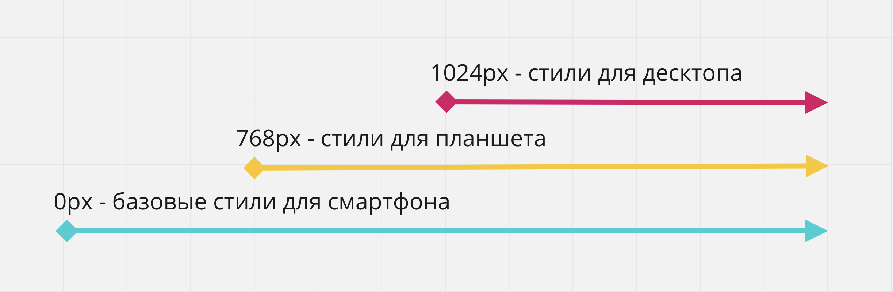

Історично склалося так, що дизайнери починали розробку дизайну сайту для великого екрану, тобто перший і «головний» дизайн робився для робочого столу комп'ютера, оскільки передбачає більшу функціональність.
Проблема такого підходу у тому, що пріоритет надається користувачам комп'ютерів і ноутбуків, хоча зараз, за статистикою, домінує мобільний трафік. Багато елементів дизайну і функціоналу, які чудово виглядають і працюють на робочому столі комп'ютера, досить складно перенести на мобільний екран.
Стратегія Mobile First починається з протилежної сторони - спочатку робиться мобільна версія, після чого планшетна і десктопна. Це робить актуальну інформацію легко доступною і дозволяє приховати або змінити елементи на будь-якому екрані.

Веб-сайт повинен бути добре оптимізований для пошукових систем (SEO) і відповідати усім вимогам UX (user experience), щоб перебування користувача на сайті було максимально зручним і зрозумілим через його мобільний пристрій. Тому одні з найважливіших вимог в Mobile First розробці це:
- Насамперед показати найважливіший зміст.
- Вебсайт повинен бути легковаговим та оптимізованим, оскільки швидкість підключення мобільної мережі може бути слабкою, залежно від місця знаходження користувача.
- Веб-сайт не повинен завантажувати більше ресурсів, ніж потрібно користувачеві для отримання потрібної інформації.
- Додаткова інформація повинна завантажуватися тільки на вимогу користувача.
При розробці веб-сайту у такого підходу є великі переваги.
- Один веб-сайт - для всіх пристроїв тільки один проект. Скорочує необхідну кількість розробників.
- Зручність інтерфейсу - насамперед користувачі отримають важливий зміст сторінки.
- Швидкість завантаження - сторінка буде завантажуватися швидше на мобільних пристроях, оскільки кількість завантажених і відображених ресурсів буде меншою.
- Рейтинг в пошуку - наприклад Google не тільки надає пріоритет сайтам, оптимізованим для мобільних пристроїв, але й враховує час відкриття сторінок.
Mobile-first CSS
З технічної точки зору реалізація Mobile First досить проста - стилі для мобільних пристроїв - це базові стилі за межами медіа-запитів, після чого, для кожної точки перелому додається медіа-запит. в якому перевизначаються необхідні базові стилі, стилі з попереднього проміжку, або додаються нові. Тому в медіа-запитах переважно використовується медіа-функція min-width.
.element {
/* Базові стилі */
}
@media screen and (min-width: ширина-планшета) {
.element {
/* Стилі планшета */
}
}
@media screen and (min-width: ширина-десктопа) {
.element {
/* Стилі десктопа */
}
}
Тобто створюється легковагова версія стилів для мобільних пристроїв, а всі стилі для ширших екранів закриваються всередині відповідних медіа-запитів. Водночас HTML-розмітка не змінюється.
Плюс такого підходу у тому, що для мобільних стилів практично ніколи не потрібно задавати позиціонування, наприклад за допомогою Flexbox, тому що весь контент розміщується в одну колонку один за одним - дефолтна поведінка блокових елементів у стандартному потоці документа. Це означає, що в медіа-запитах для ширших екранів не доведеться перевизначати позиціонування.
На ілюстрації нижче показана структура медіа-запитів і стилів для простої сторінки з 2-ма точками перелому 768px і 1024px. CSS-правила всередині медіа-запитів просто додають нові стилі або скасовують попередні.
Перейдіть в повну версію редактора прикладу за посиланням і змінюйте ширину області з результатом. Зауважте, спочатку навіть немає @media, оскільки стилі пишуться для вузького екрану як база. Вже потім, під час написання стилів для ширших екранів, ми додаємо медіа-запити.
See the Pen lesson-15-mobile-first-simple by goit-academy (@goit-academy) on CodePen.
Плюси такої верстки:
- Базовий CSS-код чистіший, оскільки нам допомагає потік документа і блокова модель у позиціонуванні елементів інтерфейсу.
- Наслідування стилів від вузьких до широких екранів.
- Мінімальне перевизначення стилів позиціонування, що випливає з першого пункту.
Медіа-функція max-width
Для більшості ситуацій достатньо використовувати min-width і додати або перевизначити стилі. Проте, бувають ситуації, коли використання медіа-функції max-width робить код чистішим і читабельнішим.
Уявімо таку ситуацію - в останньому прикладі елементам необхідно додати нижній відступ тільки на мобільному пристрої, тобто до 767px (з 768 починаються стилі планшета). А для планшетного проміжку, від 768px до 1023px, необхідно, щоб в елементів з'являлася рамка.
Використання тільки min-width призведе до того, що в стилях медіа-запиту з min-width: 768px доведеться обнулити нижній відступ елементів. А в стилях медіа-запиту з min-width: 1024px будемо обнуляти стилі рамки. Не найкраще рішення.
styles.css
.box {
margin-bottom: 10px;
}
@media (min-width: 768px) {
.box {
margin-bottom: 0;
border: 1px solid black;
}
}
@media (min-width: 1024px) {
.box {
border: none;
}
}
styles.css
@media (max-width: 767px) {
.box {
margin-bottom: 10px;
}
}
@media (min-width: 768px) and (max-width: 1023px) {
.box {
border: 1px solid black;
}
}
У таких ситуаціях гарною практикою буде закрити специфічні стилі у певних проміжках, і допоможе нам в цьому медіа-функція max-width.

Перейдіть у повну версію редактора прикладу за посиланням і змінюйте ширину області з результатом.
See the Pen lesson-15-mobile-first-composition by goit-academy (@goit-academy) on CodePen.